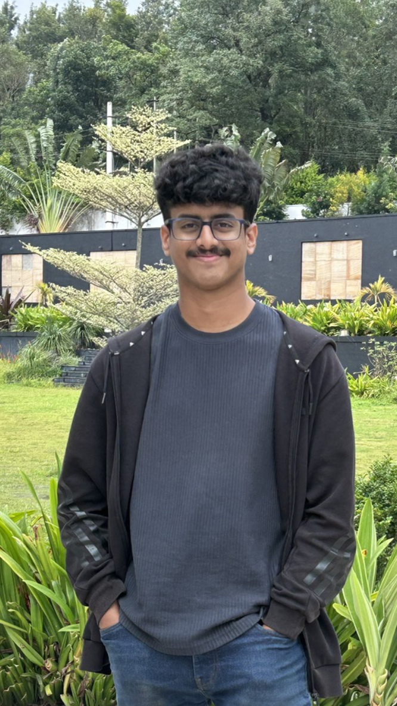

Can Models Read Beyond Their Visible Context?
Testing whether Qwen3-8B can recover information from context it can no longer directly attend to and what separates hidden-context retrieval from introspection.
Computer vision · AI safety · Mechanistic interpretability
I’m joining Honda R&D in Japan as an intelligent mobility researcher, where I’ll work on 3D perception. I graduated from IIT Bombay with a bachelor’s degree in Computer Science and Engineering.
Alongside my work in computer vision, I pursue independent research in AI safety and mechanistic interpretability. My recent projects explore what language models can report about their internal states and how we can test those reports.

Testing whether Qwen3-8B can recover information from context it can no longer directly attend to and what separates hidden-context retrieval from introspection.
Testing what four small open models can report about injected activations and whether successful reports reflect concept meaning, vector geometry or answer bias.
Probing and steering activations associated with self-correction in a reasoning model, with checks for position bias and limits on what the signal establishes.
A simplified Clash Royale simulator and reinforcement learning agents trained through self-play. Includes a technical write-up and a playable browser demo.
I’d be happy to discuss research, compare notes or explore a collaboration.
tanmay.t.v.g@gmail.com